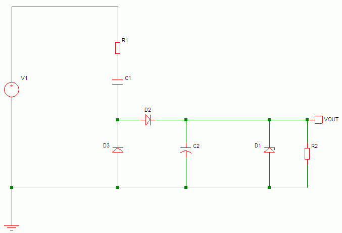
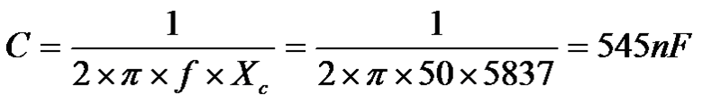
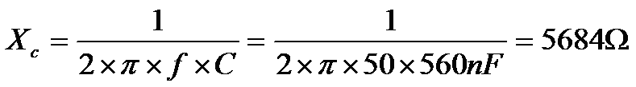
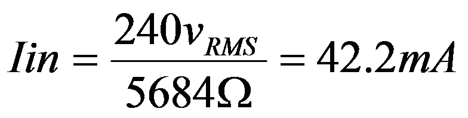
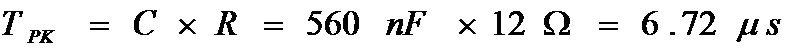
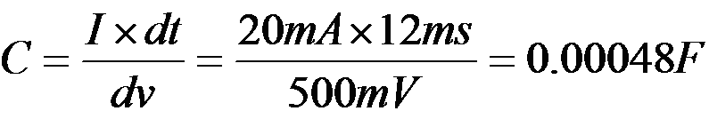
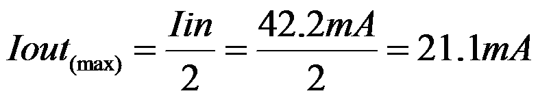

Where;
V1 = AC voltage source
R1 = Peak current limiting resistor
C1 = Dropper capacitor
D2 = Half wave rectifier diode
D3 = Capacitor discharge diode
C2 = DC smoothing capacitor
D1 = DC voltage limiting zener diode
R2 = Resistive load (for simulation purposes)
To start our capacitor dropper design, we need some initial parameters;
| Power Supply | = Mains supply |
| Max peak input current | = this will be iterative, so start with an initial guess |
| Output voltage | = the nominal output voltage rail |
| Output current | = this should be the full load continuous current |
| Output ripple | = Specify the maximum voltage ripple acceptable on the nominal output |
| Charge time | = this specifies the time during the mains cycle that provides charge to the power supply. Start with an estimate that can be refined if need be during simulations & testing. |
| Input: | ||
| Vin: | = 240 V RMS, | Mains Input voltage |
| Fin: | = 50 Hz, | Mains input frequency |
| Iin PEAK | = 30 Amps, | Rectifier diodes non-repetitive peak current (from data sheet) (Based on using the 1N4007 rectifier diode) |
| . | ||
| Output: | ||
| Vout: | = 5 Volts, | Output DC voltage |
| Iout: | = 20 mA, | Output DC current |
| Vripple: | = 500 mV, | Maximum ripple voltage on output rail |
| . | ||
| Other Parameters: | ||
| Charge Time: | = 8 ms, | Approximate time when the mains is charging the smoothing Capacitor. |
With half wave rectification we are only charging our power supply 50% of the mains cycle, the DC output will be loading the power supply 100% of the time (worst case). Therefore the current draw from the mains during the charge ½ cycle will have to be at least twice the output power.
a) The first step is to calculate our half wave peak current using our DC output current. This is done by multiplying the DC current by 0.344

| Iout: | = 20mA |
| Iin PEAK | = 20 mA / 0.344 |
| = 58.1 mA |
b)
Next, calculate the Iin
RMS
value.
As the AC current is full wave (half wave through D2 and the other half through D3)
multiply the Iin
PEAK
by the root of 2 (or 0.7071)
| Iin PEAK : | = 58.1 mA |
| Iin RMS : | = 58.1 mA * 0.7071 |
| = 41.1 mA |
Next we can calculate the reactance required to deliver the desired current at the specified supply
voltage.
The voltage drops for the components other than the dropper capacitor are ignored at this time as they
are relatively small in comparison.
Where;
Xc = Capacitors reactance in ohms
Vin = Supply voltage
Iin = Input current
Desired reactance = 5837 Ohms
Now we know what reactance we require, we can calculate the capacitor's capacitance

Where;
C = Capacitance
f = Supply frequency
PI = 3.1412
Xc = Capacitors reactance in ohms
The calculated capacitance = 545nF
The nearest preferred value of capacitance is 560nF
(being larger will ensure we still meet our 20mA demand)
Next we should recalculate the input current using the preferred value capacitance.
Calculate the reactance using the preferred value
The new reactance value is 5684 Ohms
The new input current is now calculated
The new input current is 42.2mA
Resistor R1 provides surge current limiting.
When C1 is fully discharged it is an effective zero ohm impedance. When power is first
applied particularly is the power is at its peak) the only impedance in the current
path is that of the resistor and rectifier diodes
We can now calculate a value for R1
Where;
peak = Mains supply peak voltage
peak = Rectifier diodes non-repetitive peak current
Resistor R1 value = 11.333
Using the nearest preferred value then;
Resistor R1 value = 12 Ohms
Inrush peak current = 28.3 Amps
Now we can calculate the power dissipation of R1
R1 average power = 0.021 Watts = 21mW
R1 peak power = 9600 Watts = 9.6kW
The duration of the peak power can be calculated as follows;
R1 peak power duration = 6.72us
The resistor working voltage should be greater than the peak mains voltage.
R1 working voltage >= 340V
Capacitor C2 smooths the half wave rectified mains voltage into a steady DC.
The size of capacitor is dependant upon the load current and the acceptable voltage ripple
on the DC rail
Assuming that only 8ms of the mains cycle is spent charging the smoothing capacitor
(the time when the mains voltage is greater than the capacitor {C2} voltage allowing the
rectifier diode {D2} to turn on), then the capacitor will have to supply enough energy to maintain
the DC rail for 12ms.
The average current drawn by the DC rail can be calculated as follows;
Where;
I = Average current in amps
C = Capacitance in farads
dv = DC ripple voltage
dt = Time when capacitor supplies the DC rail with current
If we re-arrange this formula we can calculate the capacitance;

Smoothing Capacitor C2 = 0.00048 Farads = 480uF
Using the nearest preferred value then;
Smoothing Capacitor C2 = 560uF
This is quite a large value capacitor and so is 0.5V of ripple.
To reduce the ripple by half will mean doubling the capacitor.
Alternatively we can do one of the following;
1. Reduce the output current demand
2. Relax the voltage ripple requirement
3. Implement two stage smoothing / filtering
4. Use full wave rectification
We can reduce the size of the smoothing capacitor C2 by reducing the load current.
If we begin by choosing a preferred value for the smoothing capacitor, say 100uF we can the work back
to find the load current that will meet our voltage ripple requirement of 0.5V
So to use a 100uF capacitor for C2 and keep the ripple voltage to 0.5V our output load
current should be reduced to 4.2mA. This is much less than our desired 20mA.
To find the best balance between load current, ripple voltage and smoothing current
some iteration and compromise to our requirements is required.
We can permit a large level of ripple voltage whilst keeping the same load current
in order to reduce our smoothing capacitor
So if we set our ripple voltage target to 1volt peak to peak and our load current is kept
at 20mA, we can calculate our new capacitor value
Our smoothing capacitor valve is now 240uF.
This about half our original value but we have twice the ripple voltage.
Again to find the best solution some iteration and compromise of our requirements is needed.
This is covered in our Variant 2 design, see Basic half wave rectifier and two stage smoothing in the next section.
This is covered in our Variant 3 design, see Full wave rectifier and two stage smoothing in the next section.
Zener Voltage
The zener diode voltage should be selected to ensure the output supply voltage is clamped
to the maximum permissible voltage above the ideal voltage of our target.
Our target output voltage is 5V
The nearest preferred value of zener voltage above this is 5.1V, the next value is 5.6V.
Our initial selection will be 5.1V as this best matches our target.
Continuous Power Rating
The continuous power rating should be calculated under the condition where the load is pulling its
minimum current. So if the load is a resistive load permanently connected the minimum load will
be the same as the full load.
But where the load may vary or be switched off the minimum current could be as low as zero amps
Here we shall assume the load can be switched off, therefore the full power supply current will have to
be carried by the zener.
a) Find the maximum continuous current supplied by C1
The Maximum output current = 21.1mA
B) Calculate the continuous power dissipation
The Zener diode continuous power dissipation = 106mW
C) Peak power dissipation
The peak power through the zener is dependant upon the following;
We have now calculated values for all our power supply components.
| R1 | = 12 Ohms, 21mW continuous power, 9.6kW peak power for 6.7us, 340V working |
| C1 | = 560nF, 340V DC, non-polarized |
| D2 & D3 | = Standard rectifier diode, 42.2mA continuous current, 30A non-repetitive peak current, 340V peak inverse voltage |
| C2 | = 560uf, 5.1V polarized |
| D1 | = Zener diode, 5.1V, 21.1mA continuous, 106mW continuous |
Take note that these are the ideal values for our requirements, in practice the actual components
will not be exact matches. Also we should ensure the components parameters are better / higher rated
than the ones calculated to compensate for all tolerances in our design.
Component tolerance analysis will be discussed later on, for now we shall use the calculated values
to perform some simulations and evaluate the circuit under dynamic conditions.
Before we can simulate our design we should specify a couple more details as follows;
{Updated: 23rd September 2008}